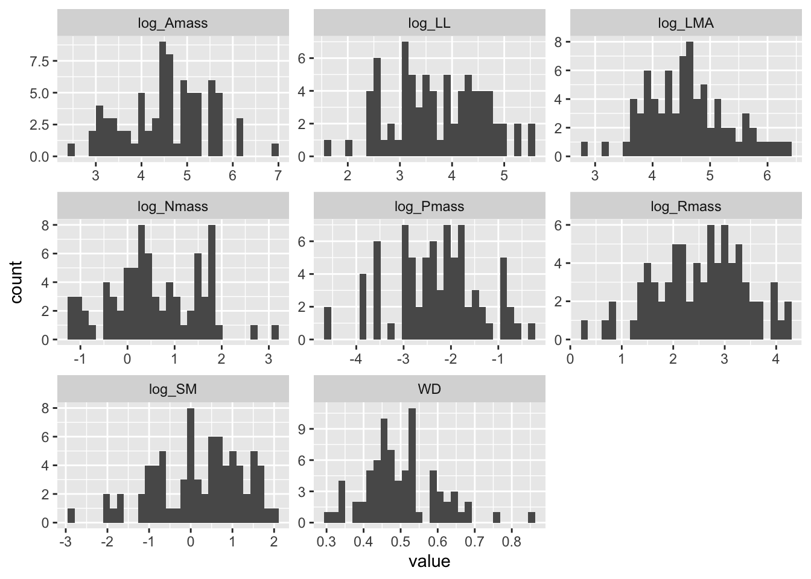
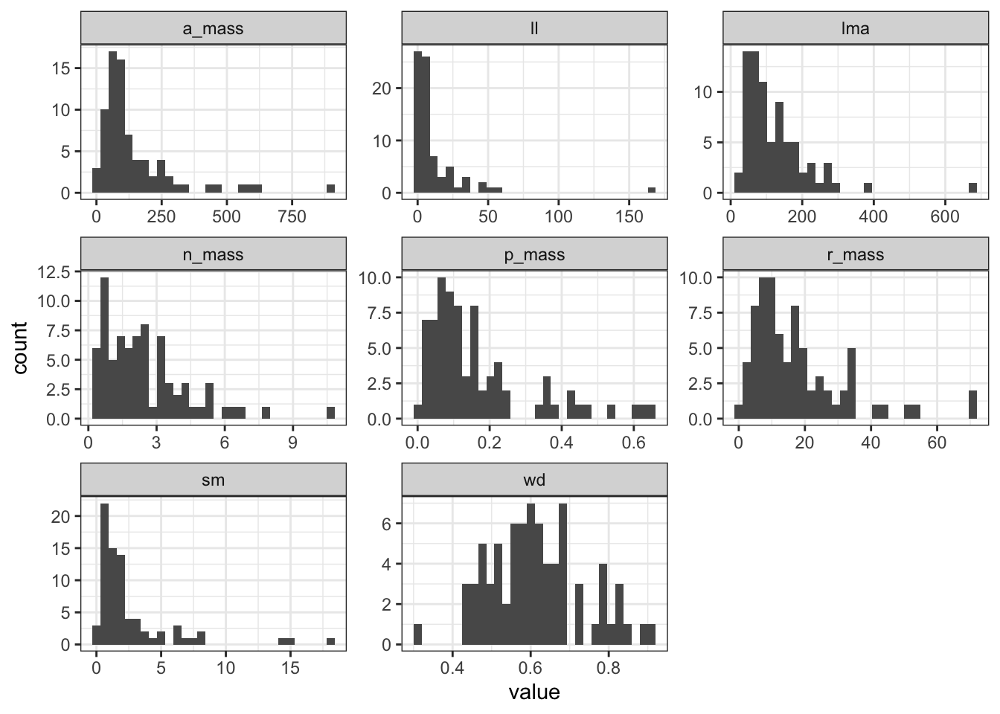
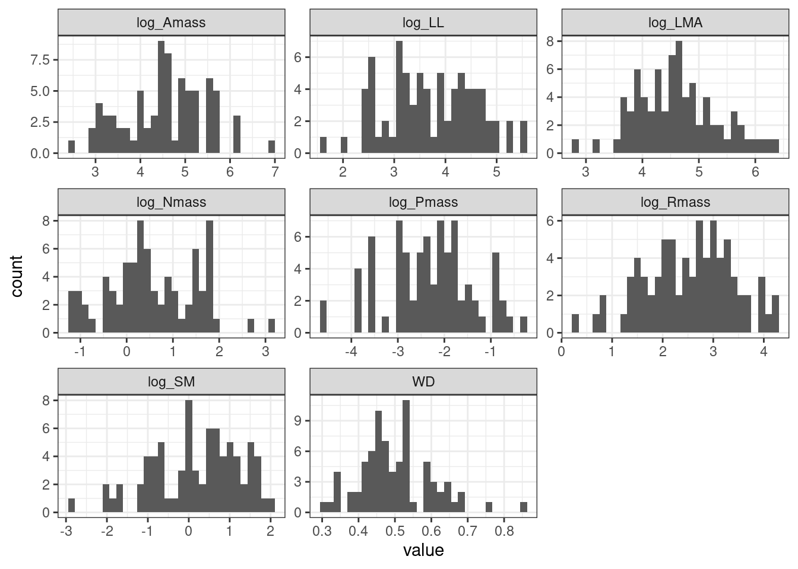
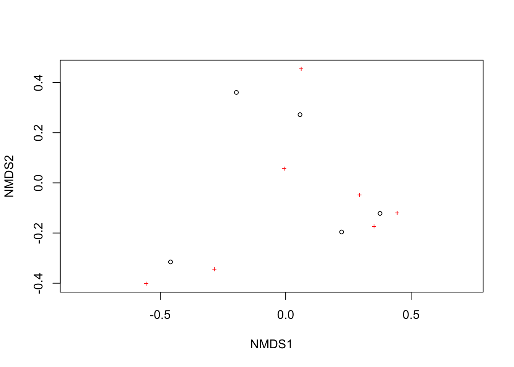
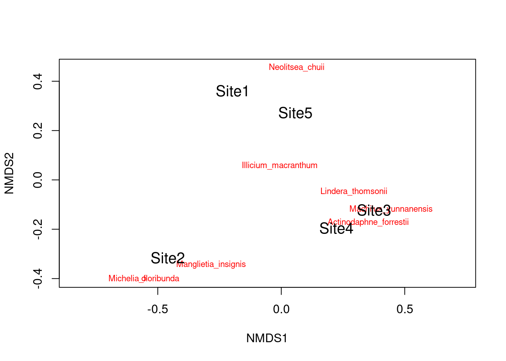
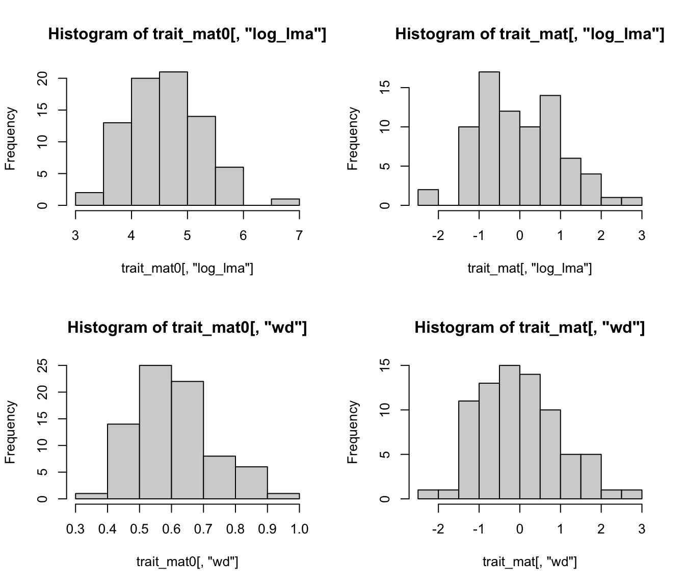
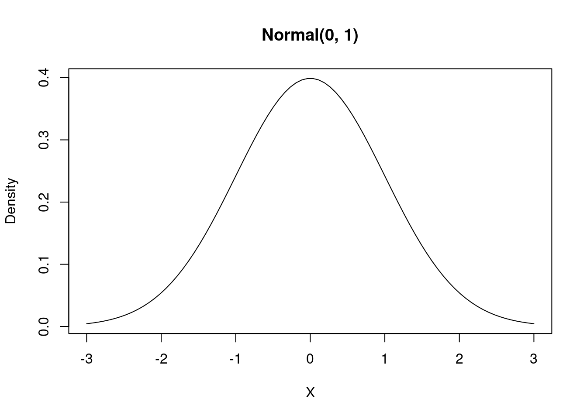
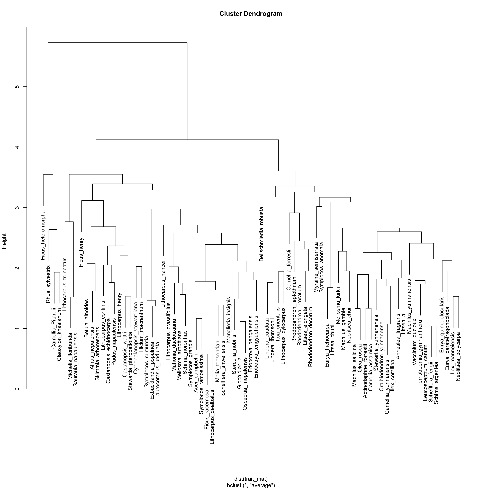

git clone https://github.com/mattocci27/phy-fun-div.gitCloning into 'phy-fun-div'...Course materials for 2023-11-16 AFEC at XTBG.
Clone this repo.
git clone https://github.com/mattocci27/phy-fun-div.gitCloning into 'phy-fun-div'...treeThe following command (probably) installs all the R packages required for this course.
renv::restore()Otherwise, please install those packages manually without using renv (I might miss some packages).
install.packages("picante")
install.packages("FD")
install.packages("tidyverse")
install.packages("rmarkdown")
install.packages("DT")
install.packages("quarto")Load some packages.
library(tidyverse)
library(picante)
library(FD)First, we import the community data.
d <- read_csv("data/samp.csv")read_csv but read.csv is fine too.phy-fun-div, and the relative path to samp.csv is data/samp.csv.We can also use here package to specify the absolute path to the file.
here::here("data/samp.csv")[1] "/home/mattocci/phy-fun-div/data/samp.csv"d <- read_csv(here::here("data/samp.csv"))but don’t do this:
d <- read_csv("/home/mattocci/phy-fun-div/data/samp.csv")because absolute paths will be different on different computers (lack of reproducibility). It is also uncomfortable to make file system structure public (security risk).
Now let’s look at the community data.
d# A tibble: 40 × 3
Site Species abund
<chr> <chr> <dbl>
1 Site1 Illicium_macranthum 1
2 Site1 Manglietia_insignis 0
3 Site1 Michelia_floribunda 0
4 Site1 Beilschmiedia_robusta 0
5 Site1 Neolitsea_chuii 0
6 Site1 Lindera_thomsonii 0
7 Site1 Actinodaphne_forrestii 0
8 Site1 Machilus_yunnanensis 0
9 Site2 Illicium_macranthum 1
10 Site2 Manglietia_insignis 2
# ℹ 30 more rowsDT::datatable(d)Then, we want to make a species \(\times\) site matrix. tapply is a useful function here.
tapply(d$abund, d$Species, sum)Actinodaphne_forrestii Beilschmiedia_robusta Illicium_macranthum
4 2 5
Lindera_thomsonii Machilus_yunnanensis Manglietia_insignis
5 2 3
Michelia_floribunda Neolitsea_chuii
2 1 samp <- tapply(d$abund, list(d$Site, d$Species), sum)
samp Actinodaphne_forrestii Beilschmiedia_robusta Illicium_macranthum
Site1 0 0 1
Site2 0 2 1
Site3 2 0 1
Site4 2 0 1
Site5 0 0 1
Lindera_thomsonii Machilus_yunnanensis Manglietia_insignis
Site1 0 0 0
Site2 0 0 2
Site3 2 2 0
Site4 2 0 1
Site5 1 0 0
Michelia_floribunda Neolitsea_chuii
Site1 0 0
Site2 2 0
Site3 0 0
Site4 0 0
Site5 0 1class(samp)[1] "matrix" "array" phylo <- read.tree("data/dummy_tree.newick")
plot(phylo)
| Abbreviation | Trait | Unit |
|---|---|---|
| LMA | Leaf mass per area | g m-2 |
| LL | Leaf lifespans (longevity) | months |
| Amass | Maximum photosynthetic rates per unit mass | nnoml g-1 s-1 |
| Rmass | Dark respiration rates per unit mass | nnoml g-1 s-1 |
| Nmass | Leaf nitrogen per unit mass | % |
| Pmass | Leaf phosphorus per unit mass | % |
| WD | Wood density | g cm-3 |
| SM | Seed dry mass | mg |
trait <- read_csv("data/dummy_trait.csv")
DT::datatable(trait)trait_long <- trait |>
pivot_longer(LMA:SM, names_to = "trait")
trait_long# A tibble: 616 × 3
sp trait value
<chr> <chr> <dbl>
1 Acer_campbellii LMA 39.8
2 Acer_campbellii LL 7.08
3 Acer_campbellii Amass 985.
4 Acer_campbellii Rmass 54.7
5 Acer_campbellii Nmass 6.56
6 Acer_campbellii Pmass 0.42
7 Acer_campbellii WD 0.46
8 Acer_campbellii SM 0.39
9 Actinodaphne_forrestii LMA 69.2
10 Actinodaphne_forrestii LL 12.5
# ℹ 606 more rowsggplot(trait_long, aes(x = value)) +
geom_histogram(position = "identity") +
facet_wrap(~ trait, scale = "free") +
theme_bw()
Probably we can do log-transformation for all the traits except for WD.
trait2 <- trait |>
mutate(
across(c(LMA, LL, Amass, Rmass, Nmass, Pmass, SM),
~ log(.),
.names = "log_{.col}")) |>
dplyr::select(sp, log_LMA, log_LL, log_Amass, log_Rmass, log_Nmass, log_Pmass, WD, log_SM)
trait2 |>
mutate(across(where(is.numeric), ~ round(., 2))) |>
DT::datatable()trait2 |>
pivot_longer(log_LMA:log_SM, names_to = "trait") |>
ggplot(aes(x = value)) +
geom_histogram(position = "identity") +
facet_wrap(~ trait, scale = "free") +
theme_bw()
samp > 0 Actinodaphne_forrestii Beilschmiedia_robusta Illicium_macranthum
Site1 FALSE FALSE TRUE
Site2 FALSE TRUE TRUE
Site3 TRUE FALSE TRUE
Site4 TRUE FALSE TRUE
Site5 FALSE FALSE TRUE
Lindera_thomsonii Machilus_yunnanensis Manglietia_insignis
Site1 FALSE FALSE FALSE
Site2 FALSE FALSE TRUE
Site3 TRUE TRUE FALSE
Site4 TRUE FALSE TRUE
Site5 TRUE FALSE FALSE
Michelia_floribunda Neolitsea_chuii
Site1 FALSE FALSE
Site2 TRUE FALSE
Site3 FALSE FALSE
Site4 FALSE FALSE
Site5 FALSE TRUEapply(samp > 0, 1, sum)Site1 Site2 Site3 Site4 Site5
1 4 4 4 3 \(H' = - \sum_i^n p_i\mathrm{log}p_i\), where \(p_i\) is the relative abundance for species i.
shannon <- function(abund) {
p0 <- abund / sum(abund)
p <- p0[p0 > 0]
-sum(p * log(p))
}apply(samp, 1, shannon) Site1 Site2 Site3 Site4 Site5
0.000000 1.351784 1.351784 1.329661 1.098612 You don’t have to reinvent the wheel.
vegan::diversity(samp, index = "shannon") Site1 Site2 Site3 Site4 Site5
0.000000 1.351784 1.351784 1.329661 1.098612 res_mds <- metaMDS(samp)Run 0 stress 0
Run 1 stress 7.054053e-05
... Procrustes: rmse 0.1288635 max resid 0.198604
Run 2 stress 8.429922e-05
... Procrustes: rmse 0.1463009 max resid 0.2669394
Run 3 stress 0
... Procrustes: rmse 0.1090292 max resid 0.1592438
Run 4 stress 0
... Procrustes: rmse 0.05941474 max resid 0.09519876
Run 5 stress 8.512828e-05
... Procrustes: rmse 0.1191058 max resid 0.1785049
Run 6 stress 0.1302441
Run 7 stress 0
... Procrustes: rmse 0.07841779 max resid 0.1275925
Run 8 stress 0
... Procrustes: rmse 0.07106395 max resid 0.0960611
Run 9 stress 5.780344e-05
... Procrustes: rmse 0.02346335 max resid 0.03923686
Run 10 stress 0
... Procrustes: rmse 0.09767687 max resid 0.1363813
Run 11 stress 0.09681018
Run 12 stress 7.894815e-05
... Procrustes: rmse 0.06817085 max resid 0.08745644
Run 13 stress 6.190828e-06
... Procrustes: rmse 0.09033978 max resid 0.1170717
Run 14 stress 0.1302441
Run 15 stress 7.463175e-05
... Procrustes: rmse 0.1288812 max resid 0.1986409
Run 16 stress 8.829549e-05
... Procrustes: rmse 0.1430439 max resid 0.2501089
Run 17 stress 7.069814e-05
... Procrustes: rmse 0.128874 max resid 0.1986277
Run 18 stress 0
... Procrustes: rmse 0.06497352 max resid 0.1058612
Run 19 stress 0.09680968
Run 20 stress 9.488052e-05
... Procrustes: rmse 0.128858 max resid 0.1986321
*** Best solution was not repeated -- monoMDS stopping criteria:
16: stress < smin
1: stress ratio > sratmax
3: scale factor of the gradient < sfgrminplot(res_mds)
We can use the function ordiplot and orditorp to add text to the plot in place of points to make some more sense.
ordiplot(res_mds, type = "n")
orditorp(res_mds, display = "species", col = "red", air = 0.01)
orditorp(res_mds, display = "sites", cex = 1.25, air = 0.01)
res_pd <- pd(samp, phylo)
res_pd PD SR
Site1 1.000000 1
Site2 3.022727 4
Site3 2.909091 4
Site4 3.136364 4
Site5 2.454545 3You can always see the help.
?pdcophenetic() creates distance matrices based on phylogenetic trees. Let’s see the first 5 species.
cophenetic(phylo)[1:5, 1:5] Acer_campbellii Melia_toosendan Skimmia_arborescens
Acer_campbellii 0.0000000 0.18181818 0.18181818
Melia_toosendan 0.1818182 0.00000000 0.09090909
Skimmia_arborescens 0.1818182 0.09090909 0.00000000
Rhus_sylvestris 0.3636364 0.36363636 0.36363636
Sterculia_nobilis 0.5454545 0.54545455 0.54545455
Rhus_sylvestris Sterculia_nobilis
Acer_campbellii 0.3636364 0.5454545
Melia_toosendan 0.3636364 0.5454545
Skimmia_arborescens 0.3636364 0.5454545
Rhus_sylvestris 0.0000000 0.5454545
Sterculia_nobilis 0.5454545 0.0000000\(MPD = \frac{1}{n} \Sigma^n_i \Sigma^n_j \delta_{i,j} \; i \neq j\), where \(\delta_{i, j}\) is the pairwise distance between species i and j
res_mpd <- mpd(samp, cophenetic(phylo))
res_mpd[1] NA 1.568182 1.454545 1.606061 1.636364The above vector shows MPD for each site.
\(MNTD = \frac{1}{n} \Sigma^n_i min \delta_{i,j} \; i \neq j\), where \(min \delta_{i, j}\) is the minimum distance between species i and all other species in the community.
res_mntd <- mntd(samp, cophenetic(phylo))
res_mntd[1] NA 1.181818 1.181818 1.295455 1.272727\[ \mathrm{CWM}_i = \frac{\sum_{j=1}^n a_{ij} \times t_{j}}{\sum_{j=1}^n a_{ij}} \]
or
\[ \mathrm{CWM}_i = \frac{\vec{a_i} \cdot \vec{t}}{\sum_{j=1}^n a_{ij}}, \]
where \(a_{ij}\) is the abundance of species j in community i, and \(t_{j}\) is a trait value of species j.
tmp <- trait2 |>
filter(sp %in% colnames(samp))
tmp# A tibble: 8 × 9
sp log_LMA log_LL log_Amass log_Rmass log_Nmass log_Pmass WD log_SM
<chr> <dbl> <dbl> <dbl> <dbl> <dbl> <dbl> <dbl> <dbl>
1 Actinoda… 4.24 2.53 5.01 2.17 0.412 -1.83 0.48 0.300
2 Beilschm… 3.61 3.09 5.72 3.53 1.75 -1.35 0.47 0.770
3 Illicium… 5.66 4.75 3.27 0.793 -0.288 -3.51 0.4 -0.0305
4 Lindera_… 4.47 3.70 5.49 3.02 0.626 -3.00 0.53 -0.734
5 Machilus… 4.26 3.36 4.65 2.69 0.239 -0.821 0.59 0.0770
6 Mangliet… 6.22 5.24 3.10 0.255 -0.431 -3.91 0.45 -0.0513
7 Michelia… 4.93 3.99 3.65 2.00 0.457 -3.91 0.54 0.621
8 Neolitse… 4.65 4.18 5.20 2.30 0.489 -2.12 0.43 -1.71 (ab <- apply(samp, 1, sum))Site1 Site2 Site3 Site4 Site5
1 7 7 6 3 # %*% denotes inner product
(cws <- samp %*% as.matrix(tmp[, -1])) log_LMA log_LL log_Amass log_Rmass log_Nmass log_Pmass WD
Site1 5.664348 4.746496 3.274878 0.7929925 -0.2876821 -3.506558 0.40
Site2 35.183333 29.374355 28.224437 12.3477060 3.2744092 -21.848797 3.32
Site3 31.591321 23.923913 33.559838 16.5518827 2.2664479 -14.805146 3.60
Site4 29.288871 22.431075 27.363748 11.4308299 1.3576312 -17.075208 2.87
Site5 14.782600 12.622489 13.960935 6.1065359 0.8268364 -8.622554 1.36
log_SM
Site1 -0.03045921
Site2 2.64832362
Site3 -0.74426629
Site4 -0.94948167
Site5 -2.47922681(cwm <- cws / ab) log_LMA log_LL log_Amass log_Rmass log_Nmass log_Pmass WD
Site1 5.664348 4.746496 3.274878 0.7929925 -0.2876821 -3.506558 0.4000000
Site2 5.026190 4.196336 4.032062 1.7639580 0.4677727 -3.121257 0.4742857
Site3 4.513046 3.417702 4.794263 2.3645547 0.3237783 -2.115021 0.5142857
Site4 4.881479 3.738513 4.560625 1.9051383 0.2262719 -2.845868 0.4783333
Site5 4.927533 4.207496 4.653645 2.0355120 0.2756121 -2.874185 0.4533333
log_SM
Site1 -0.03045921
Site2 0.37833195
Site3 -0.10632376
Site4 -0.15824694
Site5 -0.82640894The species \(\times\) site matrix and the species \(\times\) trait matrix became the trait \(\times\) site matrix.
We have a data.fame or tibble object of traits. First, we need to prepare a trait matrix, then a distance matrix based on trait values.
trait_mat0 <- as.matrix(trait2[, -1])
rownames(trait_mat0) <- trait2$spLet’s see a subset of the trait matrix
trait_mat0[1:5, 1:5] log_LMA log_LL log_Amass log_Rmass log_Nmass
Acer_campbellii 3.684118 1.957274 6.892692 4.002047 1.8809906
Actinodaphne_forrestii 4.236712 2.527327 5.006359 2.173615 0.4121097
Alnus_nepalensis 4.743366 4.010419 4.341335 2.022871 0.5007753
Anneslea_fragrans 4.190715 3.293241 5.162211 3.703522 1.4632554
Beilschmiedia_robusta 3.614964 3.085573 5.722441 3.526655 1.7544037Then, we will make a trait distance matrix based on the Euclidean distance. There are other distance measures, for example Gower’s Distance, but we focus on the Euclidean distance today.
Before calculating distance, we need to make sure the unit change in distances is the same for different traits. We will scale trait values so that they have mean = 0 and SD = 1. (e.g., \((X_i - \mu) / \sigma\))
# (trait_mat0 - mean(trait_mat0)) / sd(trait_mat0)
trait_mat <- scale(trait_mat0)
par(mfrow = c(2, 2))
hist(trait_mat0[, "log_LMA"])
hist(trait_mat[, "log_LMA"])
hist(trait_mat0[, "WD"])
hist(trait_mat[, "WD"])
par(mfrow = c(1, 1))Now we can make a trait distance matrix.
trait_dm <- as.matrix(dist(trait_mat))Let’s see the first 5 species.
trait_dm[1:5, 1:5] Acer_campbellii Actinodaphne_forrestii Alnus_nepalensis
Acer_campbellii 0.000000 3.799360 5.216902
Actinodaphne_forrestii 3.799360 0.000000 2.415031
Alnus_nepalensis 5.216902 2.415031 0.000000
Anneslea_fragrans 3.175911 2.335392 3.225141
Beilschmiedia_robusta 2.545269 2.565063 3.638183
Anneslea_fragrans Beilschmiedia_robusta
Acer_campbellii 3.175911 2.545269
Actinodaphne_forrestii 2.335392 2.565063
Alnus_nepalensis 3.225141 3.638183
Anneslea_fragrans 0.000000 1.579930
Beilschmiedia_robusta 1.579930 0.000000mpd(samp, trait_dm)[1] NA 4.288349 3.530805 3.961248 3.438008ses.mpd(samp, trait_dm) ntaxa mpd.obs mpd.rand.mean mpd.rand.sd mpd.obs.rank mpd.obs.z
Site1 1 NA NaN NA NA NA
Site2 4 4.288349 3.685609 0.7978280 779 0.7554765
Site3 4 3.530805 3.714732 0.8045447 436 -0.2286095
Site4 4 3.961248 3.712215 0.8094178 628 0.3076695
Site5 3 3.438008 3.701289 1.0133848 455 -0.2598035
mpd.obs.p runs
Site1 NA 999
Site2 0.779 999
Site3 0.436 999
Site4 0.628 999
Site5 0.455 999Effect size (ES)
\[ ES = \frac{\bar{x_1} - \bar{x_2}}{\sigma} \sim Normal(\bar{x_1} - \bar{x_2}, 1) \]
where \(\bar{x_1}\) is the mean value of \(x_1\), \(\bar{x_2}\) is the mean value of \(x_2\), and \(\sigma\) is the standard deviation of the pooled data.

In null model analyses, we can translate this into a standardized effect size (SES):
\[ SES = \frac{obs - \bar{rand}}{\sigma_{rand}} \]
where obs is the observed metric, \(\bar{rand}\) is the mean value of the metric in null communities, and \(\sigma_{rand}\) is the standard deviation of the metric in the null communities.
mntd(samp, trait_dm)[1] NA 2.504352 2.697074 1.873825 2.613585ses.mntd(samp, trait_dm) ntaxa mntd.obs mntd.rand.mean mntd.rand.sd mntd.obs.rank mntd.obs.z
Site1 1 NA NaN NA NA NA
Site2 4 2.504352 2.716063 0.5392128 358 -0.39262859
Site3 4 2.697074 2.711362 0.5408904 522 -0.02641508
Site4 4 1.873825 2.700023 0.5286682 43 -1.56279060
Site5 3 2.613585 2.989970 0.7488349 326 -0.50262705
mntd.obs.p runs
Site1 NA 999
Site2 0.358 999
Site3 0.522 999
Site4 0.043 999
Site5 0.326 999We will make a functional dendrogram using clustering methods. We use UPGMA in this example.
t_clust <- hclust(dist(trait_mat), method = "average")
plot(t_clust)
res_fd <- dbFD(trait_mat[colnames(samp), ], samp)FEVe: Could not be calculated for communities with <3 functionally singular species.
FDis: Equals 0 in communities with only one functionally singular species.
FRic: To respect s > t, FRic could not be calculated for communities with <3 functionally singular species.
FRic: Dimensionality reduction was required. The last 5 PCoA axes (out of 7 in total) were removed.
FRic: Quality of the reduced-space representation = 0.811349
FDiv: Could not be calculated for communities with <3 functionally singular species. res_fd$nbsp
Site1 Site2 Site3 Site4 Site5
1 4 4 4 3
$sing.sp
Site1 Site2 Site3 Site4 Site5
1 4 4 4 3
$FRic
Site1 Site2 Site3 Site4 Site5
NA 5.453089 2.917904 3.000656 3.553247
$qual.FRic
[1] 0.811349
$FEve
Site1 Site2 Site3 Site4 Site5
NA 0.7595456 0.6769400 0.7085376 0.7584941
$FDiv
Site1 Site2 Site3 Site4 Site5
NA 0.7301943 0.7617251 0.9166699 0.8261683
$FDis
Site1 Site2 Site3 Site4 Site5
0.000000 2.710994 1.842262 2.311159 2.042416
$RaoQ
Site1 Site2 Site3 Site4 Site5
0.000000 8.376023 4.005094 5.664467 4.379844
$CWM
log_LMA log_LL log_Amass log_Rmass log_Nmass log_Pmass
Site1 1.4467783 1.17548950 -1.38976382 -1.9975087 -0.88119735 -1.2775781
Site2 0.5666449 0.55085046 -0.56218769 -0.8908026 -0.09004842 -0.8660119
Site3 -0.1410729 -0.33319385 0.27087040 -0.2062427 -0.24084641 0.2088166
Site4 0.3670613 0.03104745 0.01551229 -0.7298853 -0.34295985 -0.5718506
Site5 0.4305791 0.56352114 0.11718014 -0.5812855 -0.29128834 -0.6020974
WD log_SM
Site1 -1.0150179 -0.2191496
Site2 -0.2744691 0.1665816
Site3 0.1242879 -0.2907346
Site4 -0.2341187 -0.3397288
Site5 -0.4833418 -0.9701997devtools::session_info()─ Session info ───────────────────────────────────────────────────────────────
setting value
version R version 4.3.2 (2023-10-31)
os Ubuntu 20.04.6 LTS
system x86_64, linux-gnu
ui X11
language (EN)
collate en_US.UTF-8
ctype en_US.UTF-8
tz Asia/Tokyo
date 2023-11-15
pandoc 2.5 @ /usr/bin/ (via rmarkdown)
─ Packages ───────────────────────────────────────────────────────────────────
! package * version date (UTC) lib source
P abind 1.4-5 2016-07-21 [?] RSPM (R 4.3.0)
P ade4 * 1.7-22 2023-02-06 [?] CRAN (R 4.3.2)
P ape * 5.7-1 2023-03-13 [?] CRAN (R 4.3.0)
P BiocManager 1.30.22 2023-08-08 [?] CRAN (R 4.3.2)
P cachem 1.0.8 2023-05-01 [?] RSPM (R 4.3.0)
P callr 3.7.3 2022-11-02 [?] RSPM (R 4.3.0)
P cli 3.6.1 2023-03-23 [?] RSPM (R 4.3.0)
P cluster 2.1.4 2022-08-22 [?] CRAN (R 4.2.1)
P codetools 0.2-19 2023-02-01 [?] CRAN (R 4.2.2)
P colorspace 2.1-0 2023-01-23 [?] RSPM (R 4.3.0)
P crayon 1.5.2 2022-09-29 [?] RSPM (R 4.3.0)
P devtools 2.4.5 2022-10-11 [?] RSPM (R 4.3.0)
P digest 0.6.33 2023-07-07 [?] RSPM (R 4.3.0)
P dplyr * 1.1.3 2023-09-03 [?] RSPM (R 4.3.0)
P ellipsis 0.3.2 2021-04-29 [?] RSPM (R 4.3.0)
P evaluate 0.23 2023-11-01 [?] RSPM (R 4.3.0)
P fansi 1.0.5 2023-10-08 [?] RSPM (R 4.3.0)
P fastmap 1.1.1 2023-02-24 [?] RSPM (R 4.3.0)
P FD * 1.0-12.1 2022-05-02 [?] CRAN (R 4.3.2)
P fontawesome 0.5.2 2023-08-19 [?] RSPM (R 4.3.0)
P forcats * 1.0.0 2023-01-29 [?] RSPM (R 4.3.0)
P fs 1.6.3 2023-07-20 [?] RSPM (R 4.3.0)
P generics 0.1.3 2022-07-05 [?] RSPM (R 4.3.0)
P geometry * 0.4.7 2023-02-03 [?] CRAN (R 4.3.2)
P ggplot2 * 3.4.4 2023-10-12 [?] RSPM (R 4.3.0)
P glue 1.6.2 2022-02-24 [?] RSPM (R 4.3.0)
P gtable 0.3.4 2023-08-21 [?] RSPM (R 4.3.0)
P hms 1.1.3 2023-03-21 [?] RSPM (R 4.3.0)
P htmltools 0.5.7 2023-11-03 [?] CRAN (R 4.3.2)
P htmlwidgets 1.6.2 2023-03-17 [?] RSPM (R 4.3.0)
P httpuv 1.6.12 2023-10-23 [?] RSPM (R 4.3.1)
P jsonlite 1.8.7 2023-06-29 [?] RSPM (R 4.3.0)
P knitr 1.45 2023-10-30 [?] RSPM (R 4.3.0)
P later 1.3.1 2023-05-02 [?] RSPM (R 4.3.0)
P lattice * 0.22-5 2023-10-24 [?] CRAN (R 4.3.1)
P lifecycle 1.0.4 2023-11-07 [?] CRAN (R 4.3.2)
P lubridate * 1.9.3 2023-09-27 [?] RSPM (R 4.3.0)
P magic 1.6-1 2022-11-16 [?] CRAN (R 4.3.2)
P magrittr 2.0.3 2022-03-30 [?] RSPM (R 4.3.0)
P MASS 7.3-60 2023-05-04 [?] CRAN (R 4.3.1)
P Matrix 1.6-2 2023-11-08 [?] CRAN (R 4.3.2)
P memoise 2.0.1 2021-11-26 [?] RSPM (R 4.3.0)
P mgcv 1.9-0 2023-07-11 [?] CRAN (R 4.3.1)
P mime 0.12 2021-09-28 [?] RSPM (R 4.3.0)
P miniUI 0.1.1.1 2018-05-18 [?] RSPM (R 4.3.0)
P munsell 0.5.0 2018-06-12 [?] RSPM (R 4.3.0)
P nlme * 3.1-163 2023-08-09 [?] CRAN (R 4.3.1)
P permute * 0.9-7 2022-01-27 [?] CRAN (R 4.3.0)
P picante * 1.8.2 2020-06-10 [?] CRAN (R 4.3.2)
P pillar 1.9.0 2023-03-22 [?] RSPM (R 4.3.0)
P pkgbuild 1.4.2 2023-06-26 [?] RSPM (R 4.3.0)
P pkgconfig 2.0.3 2019-09-22 [?] RSPM (R 4.3.0)
P pkgload 1.3.3 2023-09-22 [?] RSPM (R 4.3.1)
P prettyunits 1.2.0 2023-09-24 [?] RSPM (R 4.3.0)
P processx 3.8.2 2023-06-30 [?] CRAN (R 4.3.0)
P profvis 0.3.8 2023-05-02 [?] RSPM (R 4.3.0)
P promises 1.2.1 2023-08-10 [?] RSPM (R 4.3.0)
P ps 1.7.5 2023-04-18 [?] RSPM (R 4.3.0)
P purrr * 1.0.2 2023-08-10 [?] RSPM (R 4.3.0)
P R6 2.5.1 2021-08-19 [?] RSPM (R 4.3.0)
P Rcpp 1.0.11 2023-07-06 [?] RSPM (R 4.3.1)
P readr * 2.1.4 2023-02-10 [?] RSPM (R 4.3.0)
P remotes 2.4.2.1 2023-07-18 [?] RSPM (R 4.3.0)
renv 1.0.3 2023-09-19 [1] CRAN (R 4.3.2)
P rlang 1.1.2 2023-11-04 [?] CRAN (R 4.3.2)
P rmarkdown 2.25 2023-09-18 [?] RSPM (R 4.3.0)
P scales 1.2.1 2022-08-20 [?] RSPM (R 4.3.0)
P sessioninfo 1.2.2 2021-12-06 [?] RSPM (R 4.3.0)
P shiny 1.7.5.1 2023-10-14 [?] RSPM (R 4.3.1)
P stringi 1.8.1 2023-11-13 [?] CRAN (R 4.3.2)
P stringr * 1.5.0 2022-12-02 [?] RSPM (R 4.3.0)
P tibble * 3.2.1 2023-03-20 [?] RSPM (R 4.3.0)
P tidyr * 1.3.0 2023-01-24 [?] RSPM (R 4.3.0)
P tidyselect 1.2.0 2022-10-10 [?] RSPM (R 4.3.0)
P tidyverse * 2.0.0 2023-02-22 [?] RSPM (R 4.3.0)
P timechange 0.2.0 2023-01-11 [?] RSPM (R 4.3.0)
P tzdb 0.4.0 2023-05-12 [?] RSPM (R 4.3.0)
P urlchecker 1.0.1 2021-11-30 [?] RSPM (R 4.3.0)
P usethis 2.2.2 2023-07-06 [?] RSPM (R 4.3.0)
P utf8 1.2.4 2023-10-22 [?] RSPM (R 4.3.1)
P vctrs 0.6.4 2023-10-12 [?] RSPM (R 4.3.0)
P vegan * 2.6-4 2022-10-11 [?] CRAN (R 4.3.0)
P withr 2.5.2 2023-10-30 [?] RSPM (R 4.3.0)
P xfun 0.41 2023-11-01 [?] RSPM (R 4.3.0)
P xtable 1.8-4 2019-04-21 [?] RSPM (R 4.3.0)
P yaml 2.3.7 2023-01-23 [?] RSPM (R 4.3.0)
[1] /home/mattocci/phy-fun-div/renv/library/linux-ubuntu-focal/R-4.3/x86_64-pc-linux-gnu
[2] /home/mattocci/.cache/R/renv/sandbox/linux-ubuntu-focal/R-4.3/x86_64-pc-linux-gnu/9a444a72
P ── Loaded and on-disk path mismatch.
──────────────────────────────────────────────────────────────────────────────